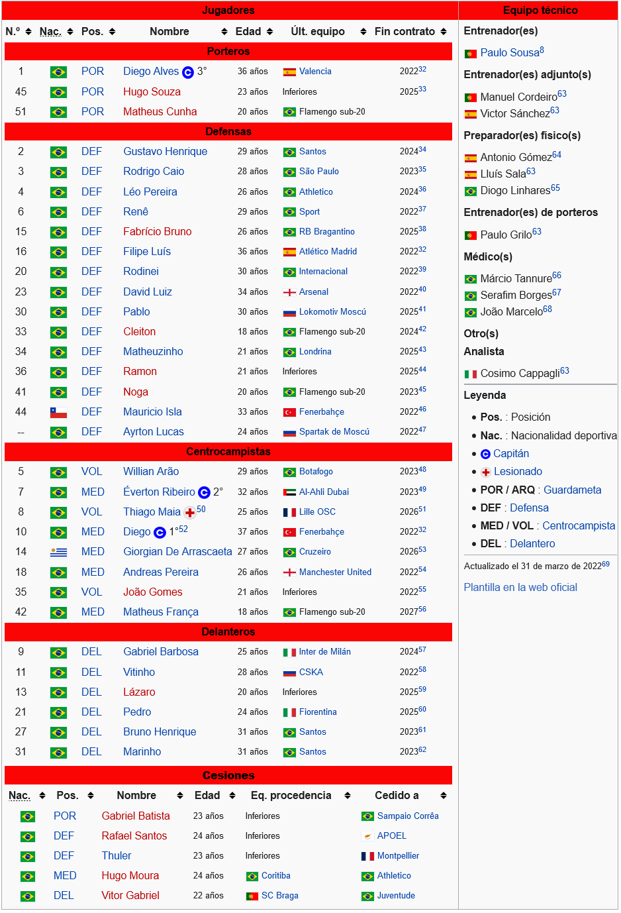

- Grupo A
- Grupo B
- Grupo C
- Grupo D
El Clube de Regatas do Flamengo, conocido simplemente como Flamengo, es un club deportivo brasileño en la ciudad de Río de Janeiro, creado en el Bairro e Praia del mismo nombre, conocido principalmente por su sección de fútbol. Fue fundado el 15 de noviembre de 1895 siendo el club más antiguo del país con el mismo nombre y segmento sin haberse fusionado. Actúa de local en el Estadio Maracaná y su uniforme se compone de una camiseta de rayas horizontales rojas y negras, pantalón blanco y medias rojas y negras. Flamengo es uno de los tres clubes brasileños que nunca ha abandonado la Primera División brasileña, siendo los otros Santos y São Paulo. Su actuación en el fútbol comenzó en 1912. Flamengo es el club con más títulos del Campeonato Carioca, ha obtenido el tricampeonato consecutivo en seis oportunidades. Además, es uno de los tres equipos que ha jugado todas las ediciones del Campeonato Brasileño de Serie A. El 26 de julio de 2009, se convirtió en el primer equipo en alcanzar el hito de mil partidos en el Campeonato Brasileño de Fútbol. Junto con Botafogo, tiene el mayor número de juegos invicto en 52 partidos en 1979. Sus mayores logros internacionales son la Copa Intercontinental de 1981 y las Copa Libertadores de 1981 y 2019. Además, ha ganado la Recopa Sudamericana 2020, la Copa de Oro Nicolás Leoz 1996 y la Copa Mercosur 1999. A nivel nacional, Flamengo conquistó 7 veces el Campeonato Brasileño, 3 veces la Copa de Brasil, 2 veces la Supercopa de Brasil y una vez la Copa de Campeones. A nivel regional conquistó 37 veces el Campeonato Carioca, una vez la Copa de Campeones Río-São Paulo y una vez el Torneo Río-São Paulo. Su mayor hito deportivo lo alcanzó el 13 de diciembre de 1981 cuando se consagró campeón de la Copa Intercontinental disputada en Japón, al derrotar al representante de la UEFA: El Liverpool de Inglaterra, por 3-0 en el hoy ya extinto Estadio Nacional de Tokio. Debido a ésta gran victoria, la propia FIFA lo reconoce oficialmente como "Campeón Mundial de Clubes" además de ser el único equipo de Río de Janeiro que posee ésta distinción. Las grandes rivalidades que tiene el Flamengo son el Fluminense, con el que juega el Fla-Flu y en menor medida, los otros grandes clubes de Río de Janeiro: Botafogo y Vasco da Gama. También hay una rivalidad interestadual con el Atlético Mineiro y con Corinthians.
